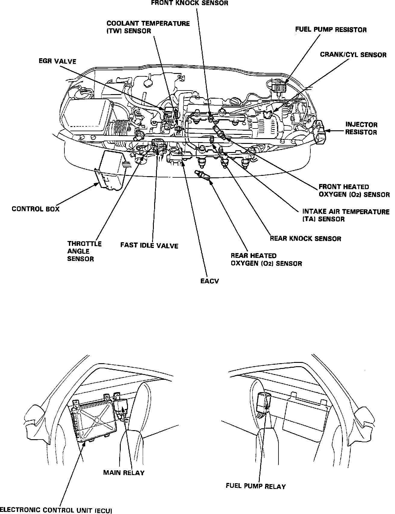

Operation CHARM
: Car repair manuals for everyone.
Home
>>
Acura
>>
1991
>>
NSX V6-3.0L DOHC
>>
Repair and Diagnosis
>>
Sensors and Switches
>>
Sensors and Switches - Powertrain Management
>>
Sensors and Switches - Computers and Control Systems
>>
Air Temperature Sensor ( Ambient / Intake )
>>
Locations
Air Temperature Sensor ( Ambient / Intake ): Locations
Component Locations:
